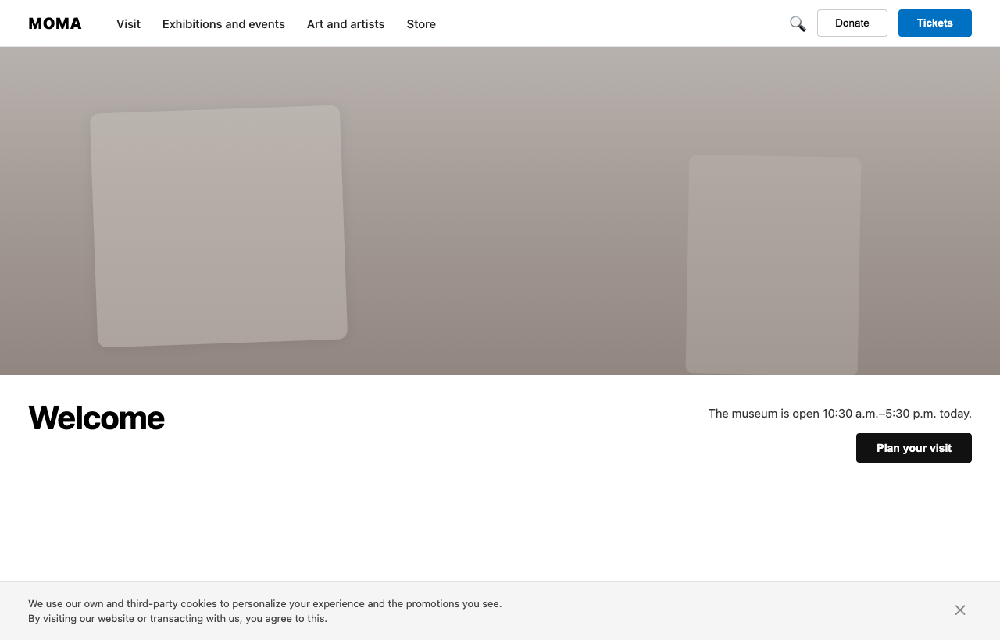
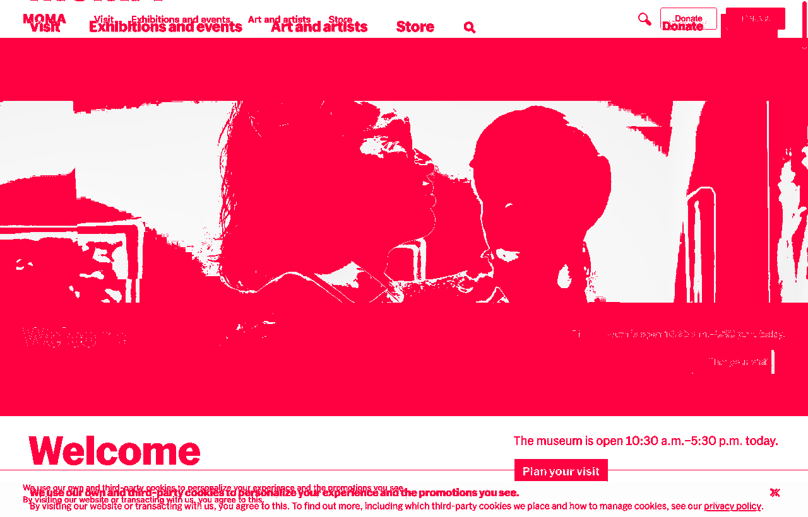
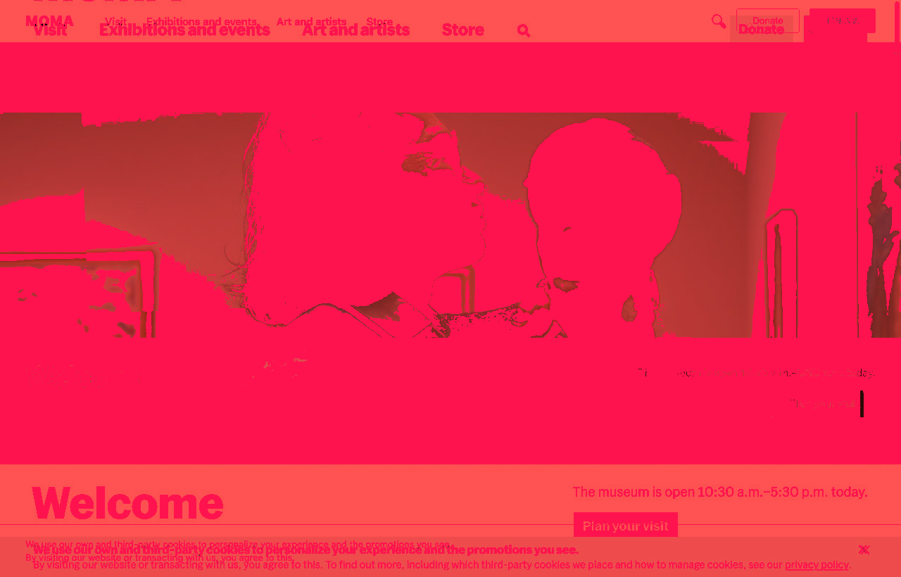

复刻验证报告 · MoMA
v4-moma · 验证于 2026-07-15T22:32:46.463Z · repro-validator/1.0.0
未通过
指标（原始值）
画布尺寸
1280 × 820 ✓
横向溢出
无 ✓
SSIM
0.6045
像素差异比例
63.04%
主要颜色差异
0.1111
结构差异
52.3397
边缘密度差异 (Sobel)
0.0097
参考图均值色
rgb(179,174,170)
候选图均值色
rgb(206,202,199)
反作弊：完全一致=否 ✓ · 整页单图=否 ✓ · 引用参考图=是 ✗
限制项 / 备注
通过规则：截图须 1280×820、无横向溢出、SSIM≥0.90、像素差异≤12%。
备注
还原度过低，自动判定为未通过。
限制项
无
视觉对比（含差异叠加热力图）
参考 reference.png

候选 candidate.png

差异 diff.png

差异叠加（红=不同）